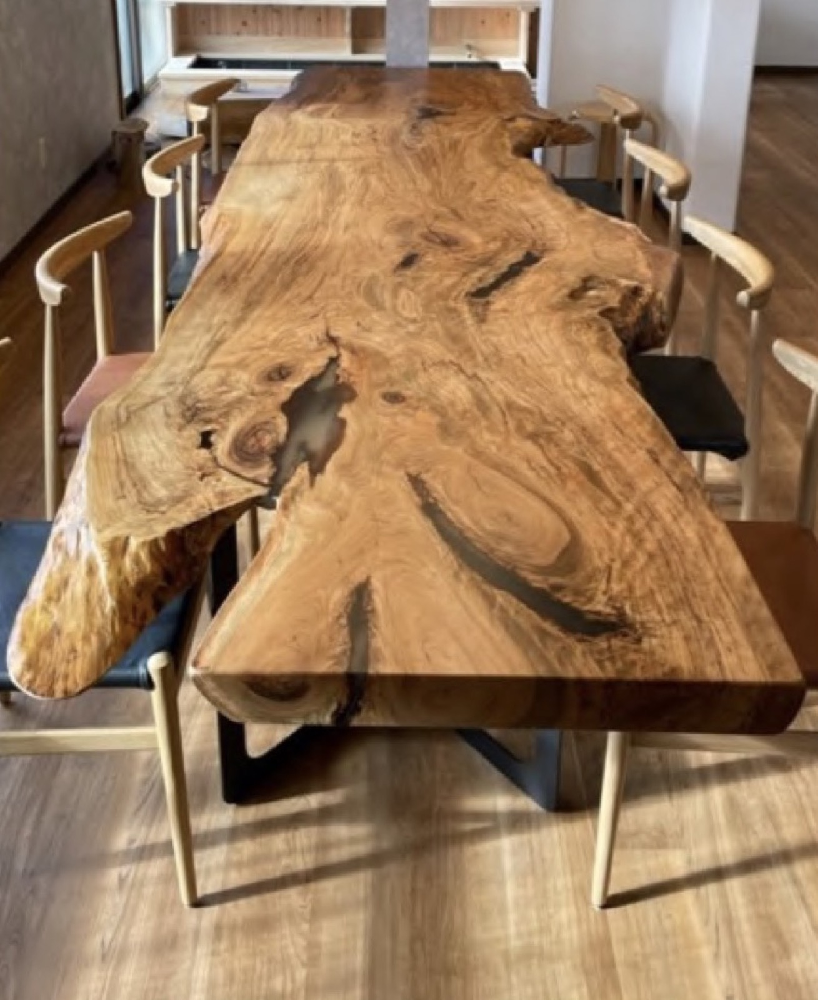
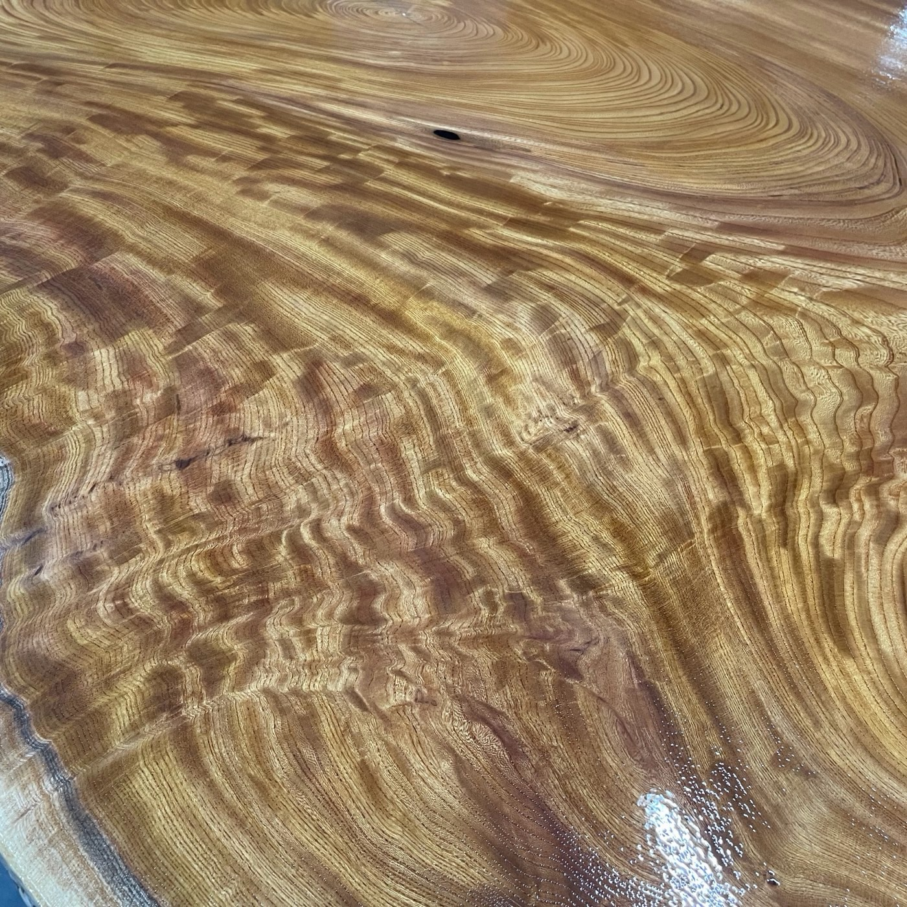
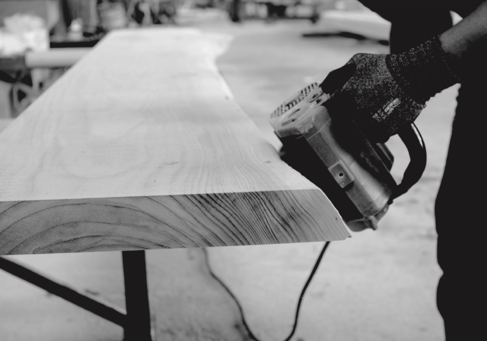
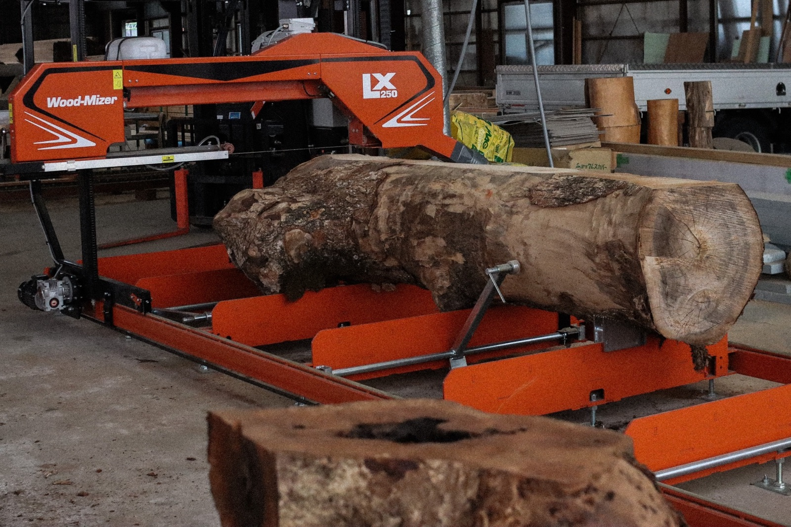
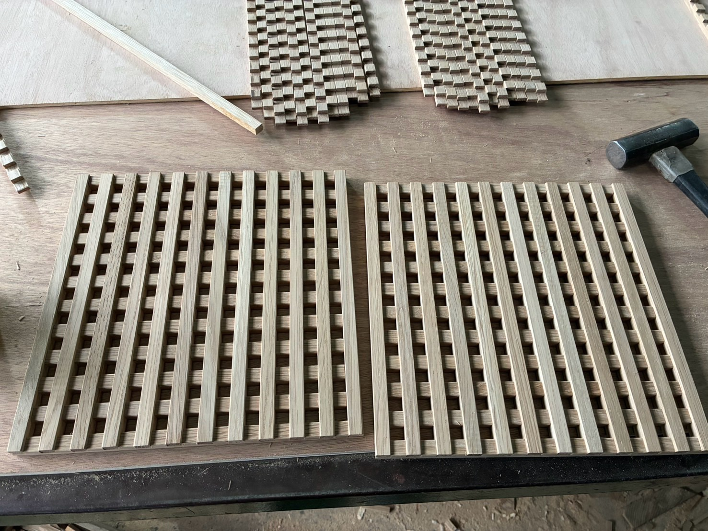
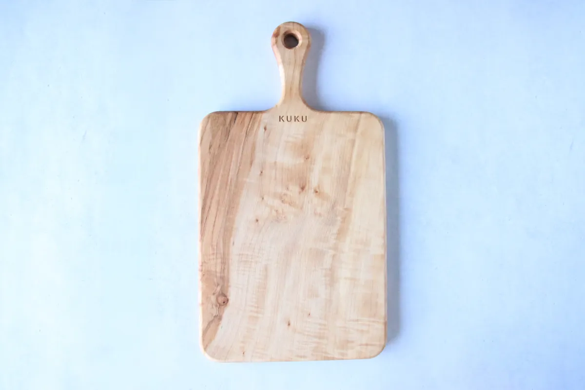
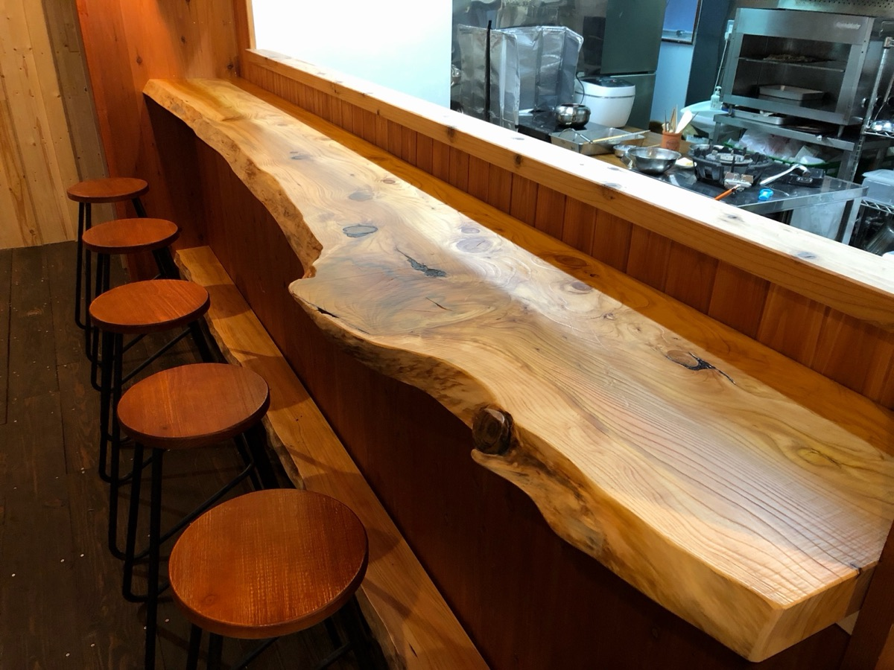
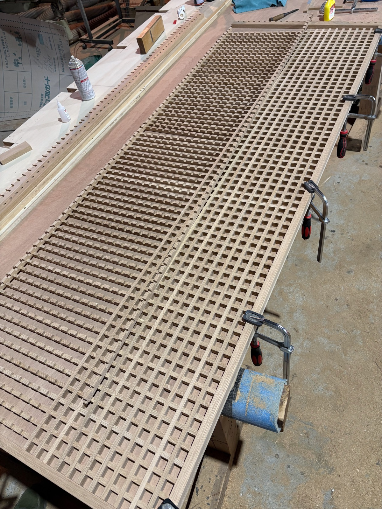
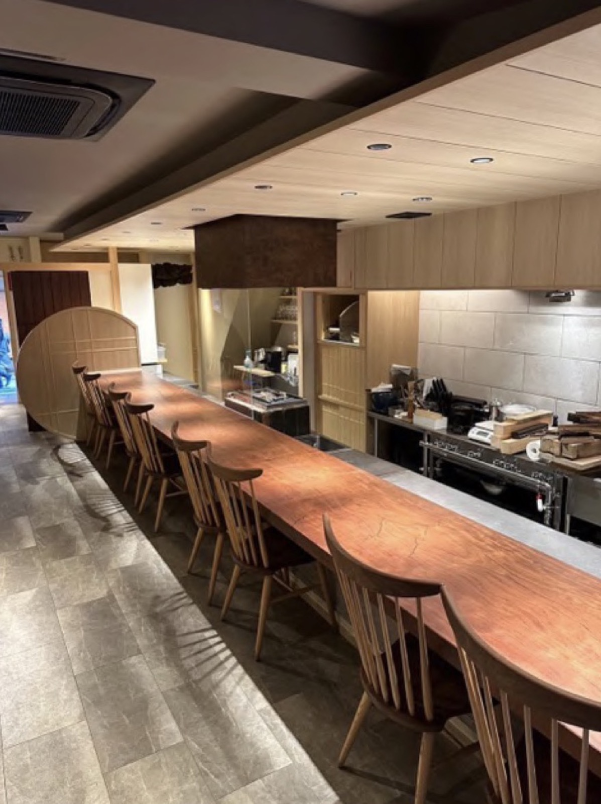
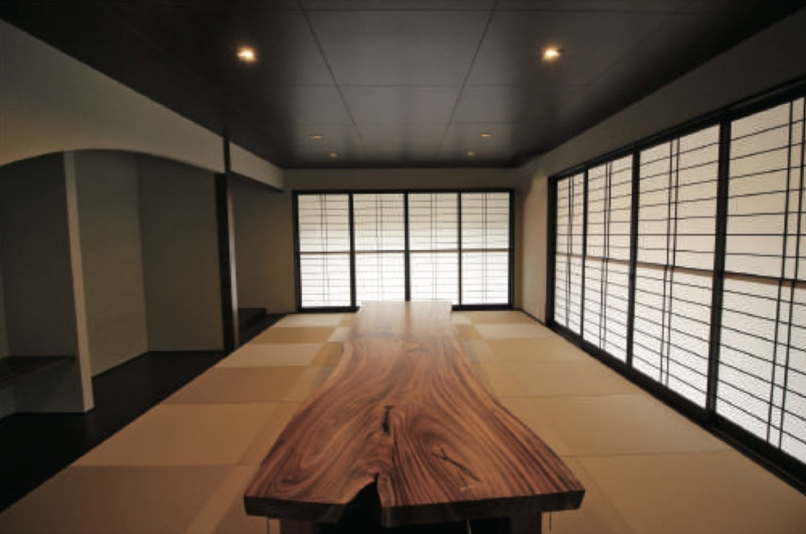

01一枚板・木材
テーブルやカウンターの天板、木材の販売と加工。お持ち込みの木材の加工・仕上げも承ります。
個人・法人LUMBER DESIGN & WOODWORKS — KYOTANGO
一枚板のカウンターから、切り株のオブジェ、内外装の造作材、木工品まで。京都・丹後の自社工場で、丸太の製材から仕上げまで一貫して加工します。
木と暮らす豊かさを
デザインする。
うねる耳、入り組んだ杢、割れや節。木は一枚ごとに性格が違い、思い通りにはなってくれません。
その「野生」を読み、活かし、空間の主役に仕立てる。代々木造建築に携わってきた福田工務店が、工場と職人と設備のすべてを使って取り組む木材加工の仕事が KUKU です。
工場と設備について

木材を活用した内外装のコーディネートと製造。素材の仕入れから製材・加工・塗装まで、4つの事業がひとつの工場の中でつながっています。

01テーブルやカウンターの天板、木材の販売と加工。お持ち込みの木材の加工・仕上げも承ります。
個人・法人
02大径木の製材から、切り株や角材のオブジェ、店舗ディスプレイまで。原木の製材のご依頼も承ります。
設計・店舗・製材のご依頼
03化粧部材や特注部材を、プレカット・仕上げまで済ませて現場へ直送。現場での加工の手間を減らします。
施工会社・内装業者
04ノベルティ、ホテル・店舗の販売品、継続製品など。レーザーでの名入れやOEMにも対応し、提携工場との連携で中〜大ロットにも対応します。
法人様向け製材する目で木を選び、加工する手で仕上げる。製材ができるから素材を選べる。造作ができるから納まりまで考えられる。木工品をつくるから細部の精度にこだわれる。ひとつの案件に、4つの事業の知見と設備をまとめて投入できるのが KUKU の強みです。

変わった形のカウンター、切り株を据えるディスプレイ、大きく重い一枚もの。描いたイメージを、木の性格を読みながら正確に形にします。

複雑な化粧部材も、工場でプレカット・仕上げまで済ませて現場へ直送します。木材の調達から特殊加工まで、まとめて任せられる工場としてお使いください。
製材所・加工所・塗装所と分かれがちな工程を、ほぼ自社で完結。中間の手間が少ないぶん、早く、細かく、柔軟に対応できます。
直径1,380mm×長さ7,200mmの丸太まで製材できます。
10mクラスのカウンターも加工できます。
昭和15年の創業以来、家づくりのために木材を備蓄してきた工務店です。
体力とスピード、そして長く続く技術の継承を大切にしています。

肉懐石店

日本料理店

旅館

個人住宅

飲食店

個人邸
木材展示場「LUMBERYARD」と加工工場をご案内します。一枚板や切り株のストック、大型の加工設備を実際に見ながら、次の案件の打ち合わせを。設計・施工のプロの方はもちろん、一般の方の見学も歓迎します。
図面やイメージ、ご予算をお聞かせください。手描きのスケッチでも大丈夫です。
木材、加工、仕上げの内容をご提案し、お見積もりします。
LUMBERYARDで実物を見て、または写真でお選びいただけます。
製材から仕上げまで、自社の工場で製作します。目安は0.5〜3ヶ月です。
梱包のうえ、ご指定の場所へお届けします。
「この形、できる？」の段階からご相談いただけます。図面がなくても、イメージ写真や手描きのスケッチで大丈夫です。